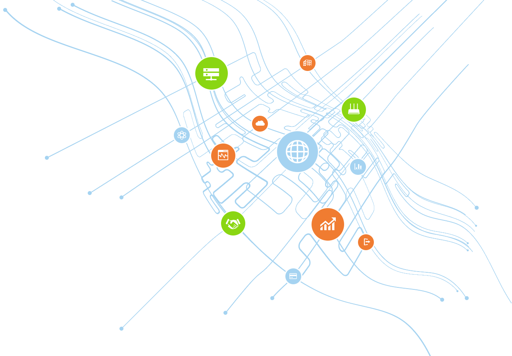
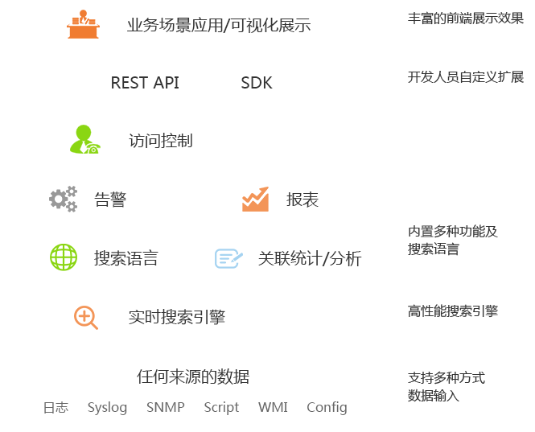

机器数据处理
可以分析企业IT系统产生的任何机器数据。
通过搜索、监控、分析和可视化以获取数据的更多价值。
数据监控引擎平台可应用于企业内部的多个场景，
典型场景包括：IT运营管理、应用程序管理、安全管理和业务分析等。
基于数据的监控、统计和分析，
提供可视化的运营管理决策和市场规划。


核心功能描述
- 数据监控引擎可实时收集来自应用程序、应用程序服务器、Web 服务器、数据库、网络、虚拟机器、远程通信设备、操作系统、传感器等位置的数据，并立即索引以便开始搜索和分析。
- 数据监控引擎可以跨多个不同来源的数据，对整个环境中的同一事件进行复杂关联分析，以便获取更全面的信息和价值。
- 可通过ODBC与传统数据库之间提供行业标准连接，也可通过标准插件实现与hadoop之间的数据交换。
- 允许开发人员使用熟知的语言进行自定义开发（JS、python、php、Ruby、SDK），可快速与其他应用和系统集成，实现数据的最大价值。
- 基于分布式的架构可满足客户对性能和大数据的处理要求，集群和负载均衡确保更高的连续性和性能优化。
- 内置多种图表功能可满足客户对可视化报表的需求而无需依靠其他展示工具。